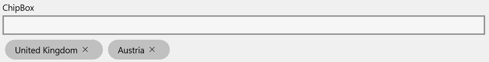

Using the ChipBox control
The MADE.UI.Controls.ChipBox element is a custom-built UI element that works with Uno's supported platforms that provides a multi value input for a text box with auto-suggest capabilities. Values added are displayed as removable chips.
The control is a familiar custom input style control used in web applications.
Shown below is the visuals for the control in its default state, with some chip values already added.
Example usage
<Page
x:Class="ChipBoxSample.MainPage"
xmlns="http://schemas.microsoft.com/winfx/2006/xaml/presentation"
xmlns:x="http://schemas.microsoft.com/winfx/2006/xaml"
xmlns:controls="using:MADE.UI.Controls"
xmlns:d="http://schemas.microsoft.com/expression/blend/2008"
xmlns:mc="http://schemas.openxmlformats.org/markup-compatibility/2006"
Background="{ThemeResource ApplicationPageBackgroundThemeBrush}"
mc:Ignorable="d">
<RelativePanel Padding="12">
<controls:ChipBox
x:Name="ChipBoxControl"
Margin="0,12,0,0"
Suggestions="{x:Bind ChipSuggestions}"
Chips="{x:Bind SelectedChips}"
TextChangeCommand="{x:Bind SuggestionTextChangeCommand}"
Header="ChipBox"
RelativePanel.AlignLeftWithPanel="True"
RelativePanel.AlignRightWithPanel="True"
RelativePanel.AlignTopWithPanel="True" />
</RelativePanel>
</Page>
Retrieving added chip values
The control exposes the selected chips through the Chips list property.
The type of objects contained in this collection will be ChipItem which contains the contents of the item as a generic Object type. This allows the ChipBox control to support any type of input value object.
Providing suggestions for chip values
The ChipBox provides a Suggestions property that can be used to provide a list of objects that should be displayed to the user as suggestions.
The control exposes a TextChangeCommand property and a TextChanged event that can be used to provide the ability to customize and provide relevant suggestions based on the text provided. This is not a baked in feature of the control itself. Here is an example of using this in action.
private static readonly IList<string> Places = new List<string>
{
"Austria",
"Belgium",
"Bulgaria",
"Croatia",
"Cyprus",
"Czechia",
"Denmark",
"Estonia",
"Finland",
"France",
"Germany",
"Greece",
"Hungary",
"Ireland",
"Italy",
"Latvia",
"Lithuania",
"Luxembourg",
"Malta",
"Netherlands",
"Poland",
"Portugal",
"Romania",
"Slovakia",
"Slovenia",
"Spain",
"Sweden"
};
public ICommand SuggestionTextChangeCommand => new RelayCommand<string>(this.OnSuggestionTextChanged);
public ObservableCollection<string> ChipSuggestions { get; } = new(Places);
private void OnSuggestionTextChanged(string obj)
{
ChipSuggestions.MakeEqualTo(Places.Where(x => x.Contains(obj, StringComparison.CurrentCultureIgnoreCase)));
}
It is up to the developer to implement the logic to provide suggestions. This is to ensure any flexibility in search and filtering is determined by the application rather than the control.
Customizing the ChipBox
The control has many customization properties that are exposed to tailor the experience for your application.
HeaderTemplate
The Header can be customized to include custom UI elements as well as a string resource.
The HeaderTemplate is also available to provide a DataTemplate for you to define the rendered UI for the Header.
ChipContentTemplate
The rendered UI elements for the chips use a MADE Chip content control. By default, the chips will be rendered displaying the string equivalent of the content provided to it. To customize the layout and display of the chip's content, apply a DataTemplate to the ChipContentTemplate property.
SuggestionsItemTemplate
As suggestions could be a list of complex objects rather than a simple string, the control provides a SuggestionsItemTemplate property that can be used to provide a DataTemplate for the suggestions that are displayed to the user.
IsReadonly
The ChipBox has the ability to be rendered in a readonly state. This is useful when you want to display the chips without any user interaction.
When enabled, the auto-suggest text box will not be displayed to the user, and the ability to remove chips will be disabled.
AllowDuplicate
By default, the ChipBox control allows duplicate values to be accepted. The AllowDuplicate property can be used to disable this behavior.
AllowFreeText
The control supports the ability to allow free text input for chip values, as well as the option to only support selections from the suggestions list.
The AllowFreeText property, enabled by default, can be used to control this behavior.